MATLAB¶
简介¶
MATLAB是美国MathWorks公司出品的商业数学软件，用于数据分析、无线通信、深度学习、图像处理与计算机视觉、 信号处理、量化金融与风险管理、机器人，控制系统等领域。
可用的版本¶
集群平台 |
模块名 |
|---|---|
思源一号 |
module load matlab/r2022a |
思源一号 |
module load matlab/r2022b |
思源一号 |
module load matlab/r2023a |
思源一号 |
module load matlab/r2023b |
思源一号 |
module load matlab/r2024a |
思源一号 |
module load matlab/r2024b |
思源一号 |
module load matlab/r2025a |
pi 2.0 |
module load matlab/r2022a |
pi 2.0 |
module load matlab/r2022b |
pi 2.0 |
module load matlab/r2023a |
pi 2.0 |
module load matlab/r2023b |
pi 2.0 |
module load matlab/r2024a |
pi 2.0 |
module load matlab/r2024b |
pi 2.0 |
module load matlab/r2025a |
算例下载¶
cd ~
git clone https://github.com/SJTU-HPC/HPCTesting.git
使用MATLAB的方式¶
命令行交互式使用 MATLAB¶
命令行使用 MATLAB，首先在超算平台上申请交互式会话窗口（以思源平台为例）：
$ srun -p 64c512g -n 10 --pty /bin/bash
输入以下命令进入 MATLAB 命令行交互式会话窗口：
$ module load matlab/r2022b
$ matlab
MATLAB is selecting SOFTWARE OPENGL rendering.
< M A T L A B (R) >
Copyright 1984-2022 The MathWorks, Inc.
R2022b Update 5 (9.13.0.2193358) 64-bit (glnxa64)
February 10, 2023
>>
在此交互式窗口内，可以执行 MATLAB 命令：
>> a=4;
>> b=5;
>> a+b
ans =
9
>>
提交 MATLAB 脚本¶
π 超算提交单核CPU脚本
#!/bin/bash
#SBATCH -J matlab_test
#SBATCH -p small
#SBATCH -o %j.out
#SBATCH -e %j.err
#SBATCH -n 1
#SBATCH --ntasks-per-node=1
module load matlab/r2022a
cd ~/HPCTesting/matlab/case1
matlab -r test
思源一号提交单核CPU脚本
#!/bin/bash
#SBATCH -J matlab_test
#SBATCH -p 64c512g
#SBATCH -o %j.out
#SBATCH -e %j.err
#SBATCH -n 1
#SBATCH --ntasks-per-node=1
module load matlab/r2022a
cd ~/HPCTesting/matlab/case1
matlab -r test
使用sbatch命令提交脚本，脚本运行完毕后，在本地将生成一张名为 1.png 的图片，如程序运行无误，该图片的内容与本地 result.png 内容一致：
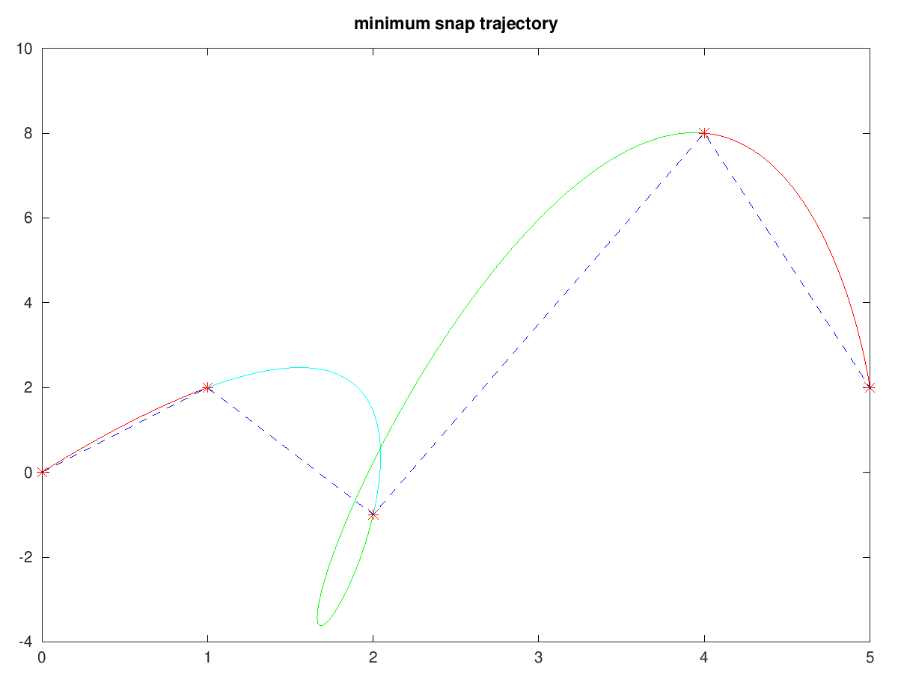
π 超算提交多核CPU脚本
#!/bin/bash
#SBATCH -J matlab_test
#SBATCH -p cpu
#SBATCH -o %j.out
#SBATCH -e %j.err
#SBATCH -n 40
#SBATCH --cpus-per-task 1
module load matlab/r2022a
cd ~/HPCTesting/matlab/case2
matlab -r multicore
思源一号提交多核CPU脚本
#!/bin/bash
#SBATCH -J matlab_test
#SBATCH -p 64c512g
#SBATCH -o %j.out
#SBATCH -e %j.err
#SBATCH -n 1
#SBATCH --cpus-per-task 64
module load matlab/r2022a
cd ~/HPCTesting/matlab/case2
matlab -r multicore
可视化平台部署的 MATLAB¶
可视化平台部署了 MATLAB 应用，可运行MATLAB自带的可视化界面，进行交互操作。
登录可视化平台，选择 MATLAB 应用
使用hpc帐号登录HPC studio（https://studio.hpc.sjtu.edu.cn）后，点击 MATLAB 应用图标
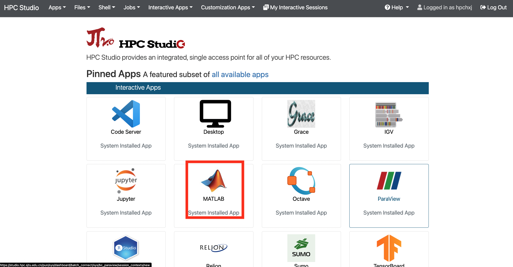
申请资源，选择 MATLAB 版本
点击 MATLAB 图标后会跳转至资源选择界面，该页面上可选择申请的时长、可视化桌面的分辨率、平台资源以及MATLAB版本。
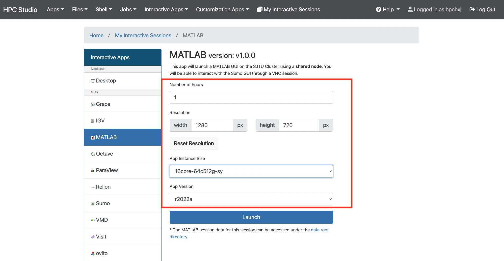
选择完毕后点击Launch按钮即跳转至会话管理界面，该界面会列出近期正在排队、运行或者已完成的studio会话。
等到该会话完成排队，进入Running状态，点击下方 Launch MATLAB 按钮，即可进入MATLAB应用。
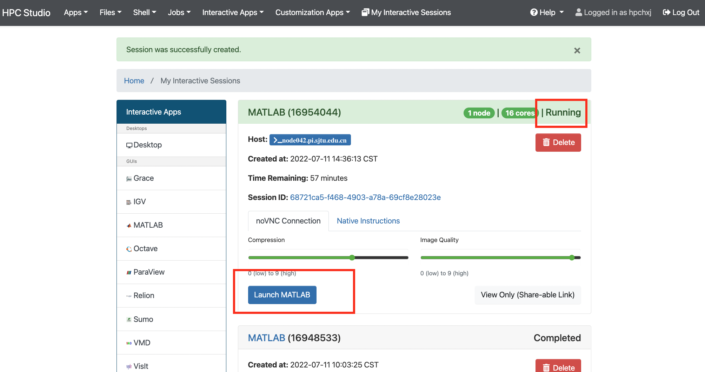
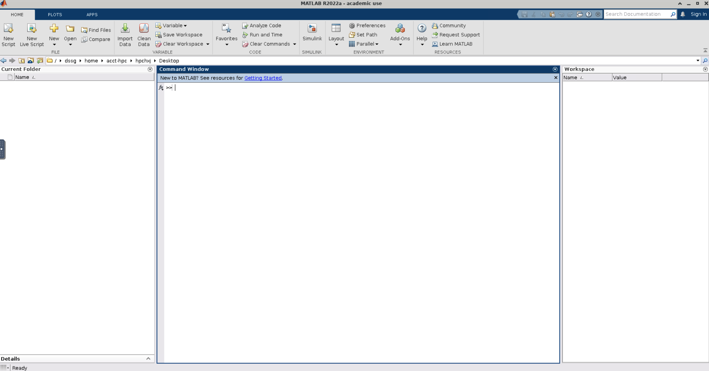
可视化平台桌面启动 MATLAB¶
除了从可视化平台的应用入口直接启动 MATLAB, 也可申请远程桌面，从远程桌面的客户端运行 MATLAB 应用。
启动远程桌面
使用hpc帐号登录HPC studio（https://studio.hpc.sjtu.edu.cn）后，点击"Interactive Apps >> Desktop"。选择需要的核数，session时长（默认1核、1小时），点击"Launch"启动远程桌面。待选项卡显示作业在RUNNING的状态时,点击"Launch Desktop"即可进入远程桌面。
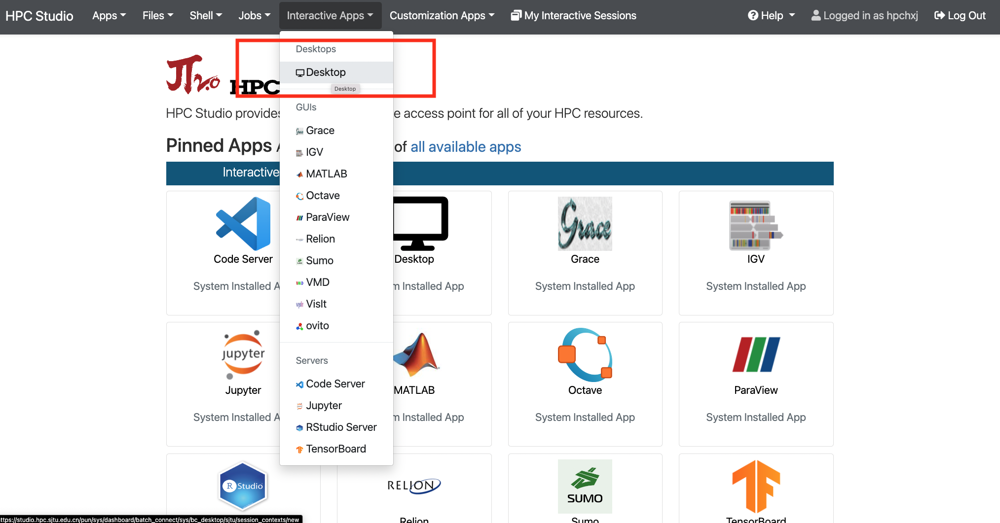
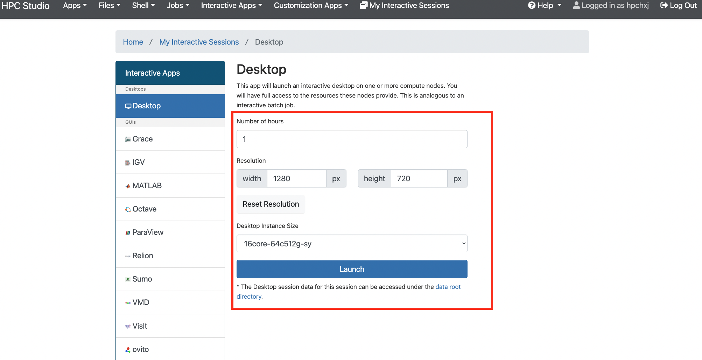
除了从思源一号启动远程桌面外，π 超算也支持启动远程桌面，在选定核数的同时可以同时选定平台：
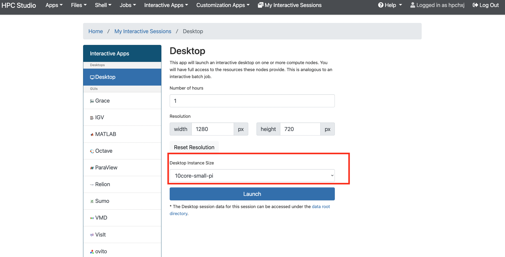
启动MATLAB
远程桌面中点击右键，选择Open Terminal Here打开终端。
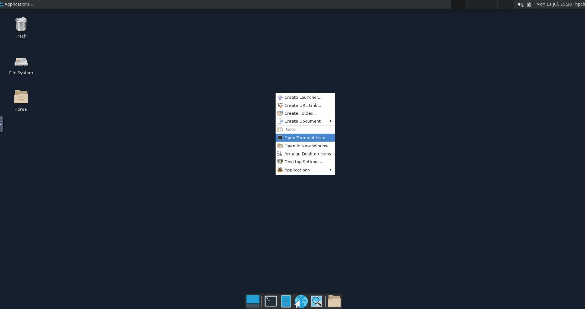
在终端中使用命令 module load matlab/r2022a && matlab , π 超算和思源一号使用的命令一致。
启动后即可使用MATLAB R2022a
使用GPU版本的 MATLAB¶
可视化平台使用MATLAB GPU版¶
启动远程桌面
使用hpc帐号登录HPC studio（https://studio.hpc.sjtu.edu.cn）后，点击"Interactive Apps >> Desktop"。选择需要的核数，session时长（默认1核、1小时），点击"Launch"启动远程桌面。待选项卡显示作业在RUNNING的状态时,点击"Launch Desktop"即可进入远程桌面。
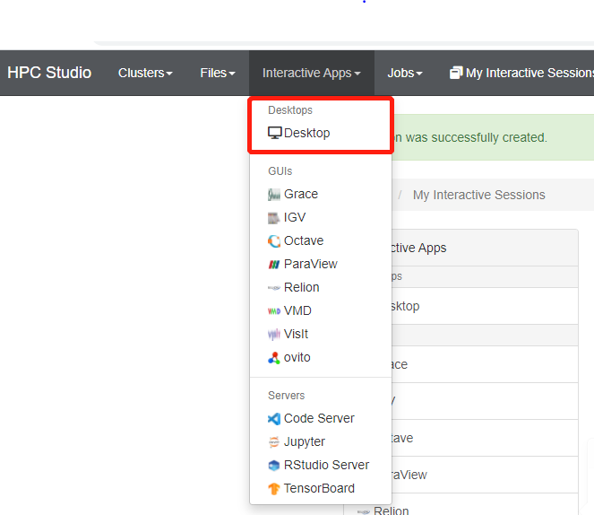
选定核数的时候选择思源一号的一张GPU卡：
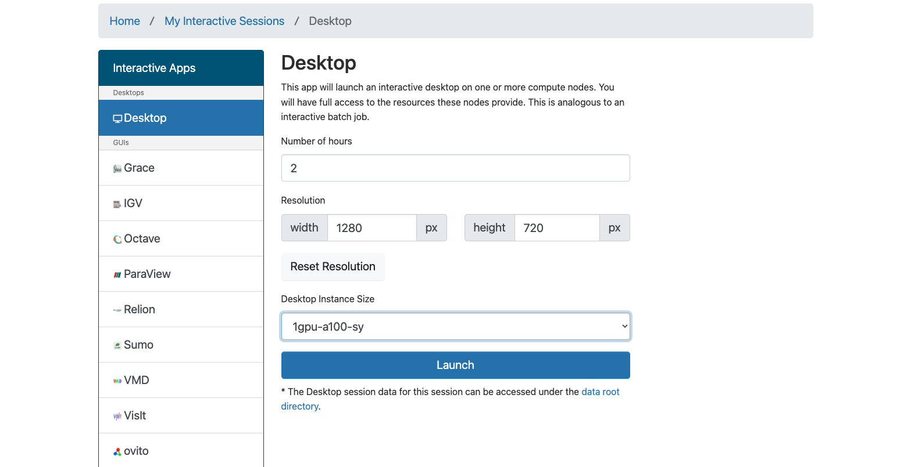
启动GPU版本MATLAB
在窗口中启动终端（terminal），在终端输入 module load matlab/r2022a && matlab ，即可启动GPU版本matlab。
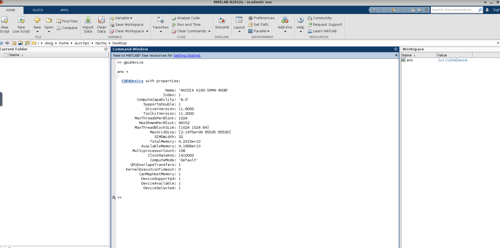
提交MATLAB GPU版脚本¶
思源一号
#!/bin/bash
#SBATCH -J matlab_test
#SBATCH -p a100
#SBATCH -o %j.out
#SBATCH -e %j.err
#SBATCH -n 1
#SBATCH -N 1
#SBATCH --cpus-per-task 16
#SBATCH --gres gpu:1
module load matlab/r2022a
matlab -r $YOUR_SCRIPT_FILE
pi2.0
#!/bin/bash
#SBATCH -J matlab_test
#SBATCH -p dgx2
#SBATCH -o %j.out
#SBATCH -e %j.err
#SBATCH -n 1
#SBATCH -N 1
#SBATCH --cpus-per-task 6
#SBATCH --gres gpu:1
module load matlab/r2022a
matlab -r $YOUR_SCRIPT_FILE
多节点并行版的 MATLAB¶
首先，进入可视化终端界面
通过 HPC Studio https://studio.hpc.sjtu.edu.cn 打开远程桌面
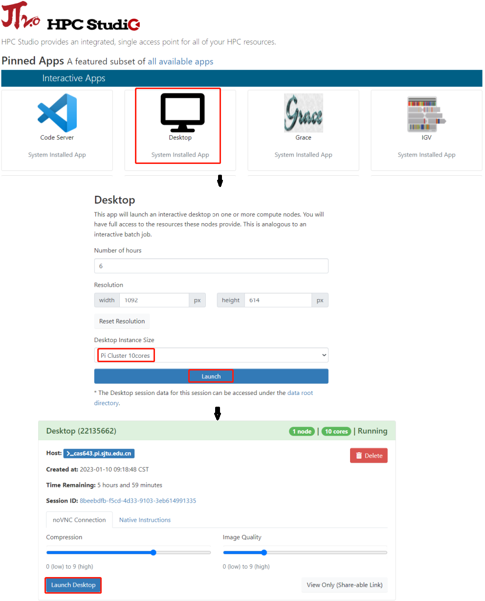
在桌面打开终端，创建 MATLAB 工作目录（可选），加载 MATLAB 环境：
cd ~
mkdir matlab && cd matlab
module load matlab/r2022a
matlab
打开 MATLAB 后，导入 SlurmProfile。SlumProfile 中记录了多节点并行运行的 parpool 设置，导入的配置可以在 Cluster Profile Manager 中确认。
在 MATLAB 下方的命令行窗口输入命令:
# 若在 Pi 2.0 上使用 Matlab R2022a，导入下面的并行配置
profile_master = parallel.importProfile('/lustre/opt/contribute/cascadelake/matlab/R2022a/ParSlurmProfile/R2022a-SlurmParForUser.mlsettings');
# 若在 Pi 2.0 上使用 Matlab R2023a，导入下面的并行配置
profile_master = parallel.importProfile('/lustre/opt/contribute/cascadelake/matlab/R2023a/ParSlurmProfile/R2023a-SlurmParForUser.mlsettings');
# 若在 Pi 2.0 上使用 Matlab R2024a，导入下面的并行配置
profile_master = parallel.importProfile('/lustre/opt/contribute/cascadelake/matlab/R2024a/ParSlurmProfile/R2024a-SlurmParForUser.mlsettings');
# 若在 Pi 2.0 上使用 Matlab R2025a，导入下面的并行配置
profile_master = parallel.importProfile('/lustre/opt/contribute/cascadelake/matlab/R2025a/ParSlurmProfile/R2025a-SlurmParForUser.mlsettings');
# 若在思源一号上使用 Matlab R2022a，导入下面的并行配置
profile_master = parallel.importProfile('/dssg/opt/icelake/linux-centos8-icelake/contribute/matlab/R2022a/ParSlurmProfile/R2022a-SlurmParForUser.mlsettings');
# 若在思源一号上使用 Matlab R2023a，导入下面的并行配置
profile_master = parallel.importProfile('/dssg/opt/icelake/linux-centos8-icelake/contribute/matlab/R2023a/ParSlurmProfile/R2023a-SlurmParForUser.mlsettings');
# 若在思源一号上使用 Matlab R2024a，导入下面的并行配置
profile_master = parallel.importProfile('/dssg/opt/icelake/linux-centos8-icelake/contribute/matlab/R2024a/ParSlurmProfile/R2024a-SlurmParForUser.mlsettings');
# 若在思源一号上使用 Matlab R2025a，导入下面的并行配置
profile_master = parallel.importProfile('/dssg/opt/icelake/linux-centos8-icelake/contribute/matlab/R2025a/ParSlurmProfile/R2025a-SlurmParForUser.mlsettings');
# 根据选择的集群和 Matlab 版本导入并行配置后，将其设置为默认
parallel.defaultClusterProfile(profile_master);
在 MATLAB 界面选择 Home -> Parallel -> Create and Manage Clusters，在 Cluster Profile Manager 中查看导入的配置：
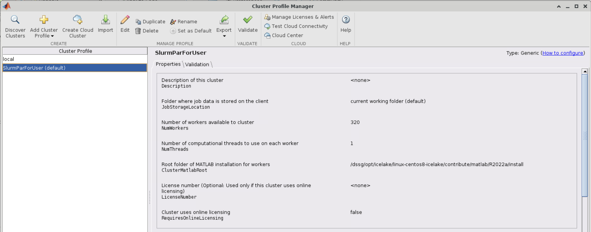
备注
对于2024a及以后的版本，导入对应集群版本的 SlurmProfile之后，需要在 Cluster Profile Manager 的插件设置中，将 Username 的值修改为您的超算账号名。
对于2023a及以前的版本，由于超算登录方式更新（https://docs.hpc.sjtu.edu.cn/login/sshlogin.html），需要重新导入对应集群版本的 SlurmProfile。或者在 Cluster Profile Manager 的 Slurm 插件设置中新增一条，名称为 AuthenticationMode，值为 Multifactor。
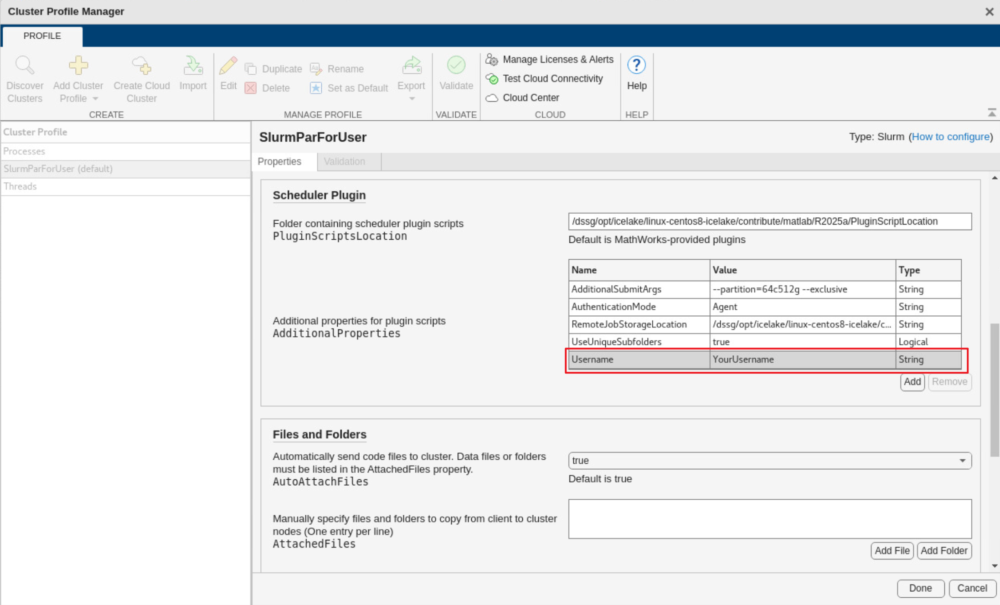
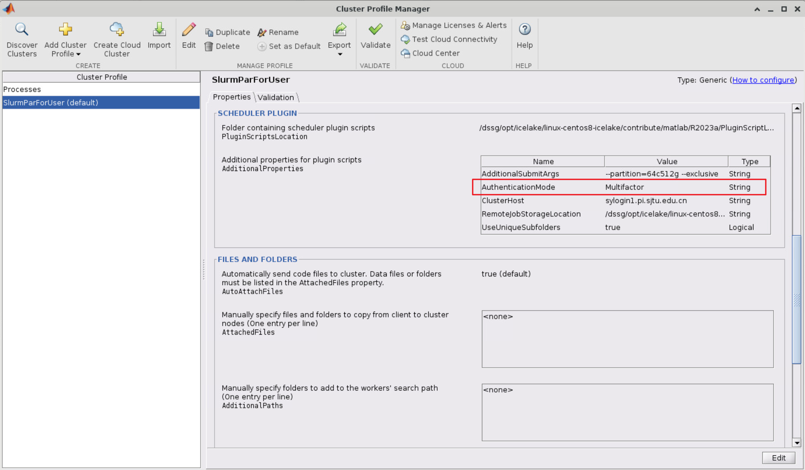
3.（可选）调整并行池的大小
默认 SlurmProfile 的最大 worker 数目为 200 （ Pi 2.0 ）或 320（思源），如果您需要调整这一数值，具体可以按照以下的 GUI 方式或者命令行方式操作，建议将最大 worker 数设为计算节点总核心数的倍数，Pi 2.0 节点为 40 核，思源一号节点为 64 核。 下面以思源一号为例，将并行池大小调整为 640 worker。
GUI 方式调整并行池大小：
在 Cluster Profile Manager 中选择要修改的 SlurmProfile -> Edit，修改 NumWorkers 为需要的值，然后保存。
如果需要导出修改之后的配置，选择 Cluster Profile Manager -> Export，将配置保存为文件，下次使用时导入即可。
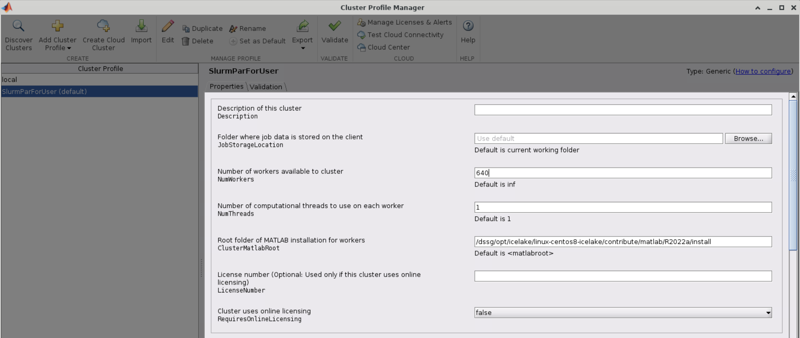
命令行方式调整并行池大小，需要在 MATLAB 命令行窗口输入：
p=parcluster();
p.NumWorkers
p.NumWorkers=640
p.saveProfile
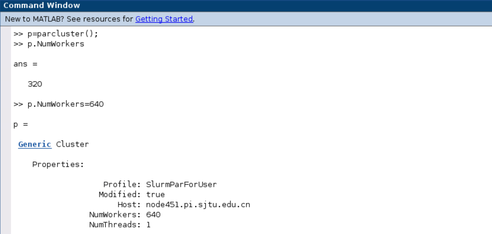
启动并行池
GUI 方式启动并行池：
点击 MATLAB 左下角的并行池图标，选择启动并行池，同时可以查看并行池运行状态。第一次申请资源池时，会要求输入在集群上的账号和密码，然后在整个 matlab session 中均有效。
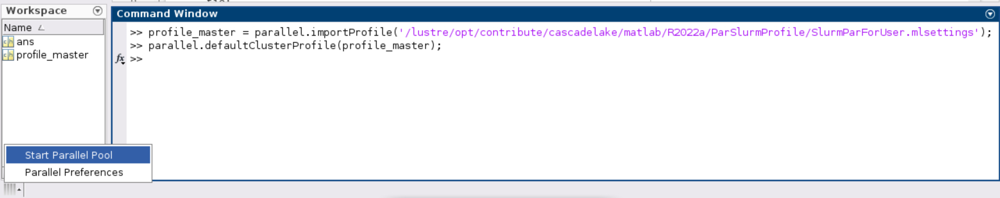
命令行方式启动并行池：
在 MATLAB 命令行窗口输入： parpool('SlurmParForUser',320)，这里的 SlurmParForUser 可能需要替换成您自定义的名字。
注意：启动并行池时，系统将按照设置的工作核心数申请资源。例如 NumWorkers 为 1000 时，系统将在启动并行池时申请到 1000 核的资源，请注意您的作业费用消耗。
接下来，运行作业
示例作业脚本路径如下所示，具体功能为素因素分解，使用的核数为 1、4、8、32、40、80 和 160 核，生成的图片为不同核数的计算时间与使用1核时的加速比。
/lustre/share/samples/matlab/composite_speedup.m
在 MATLAB 命令行窗口输入：
composite_speedup
运行结果为
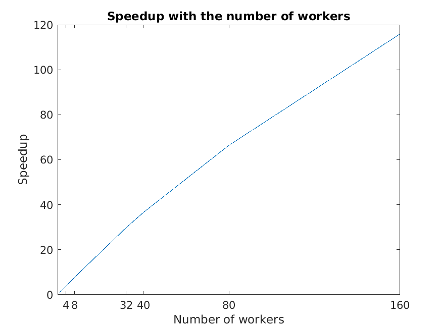
MATLAB代理设置¶
使用过程中如果遇到 Unable to open the requested feature. 等网络问题或者不能正常使用 Live Editor 功能，可以通过设置代理解决。
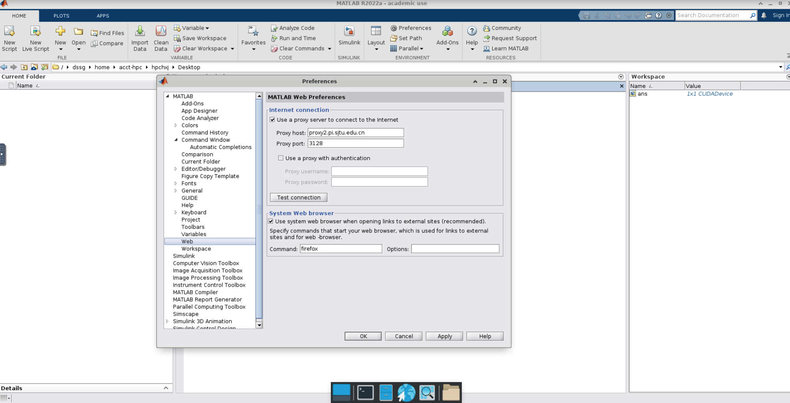
π 超算代理设置
proxy.hpc.sjtu.edu.cn:3004
思源一号代理设置
proxy2.pi.sjtu.edu.cn:3128